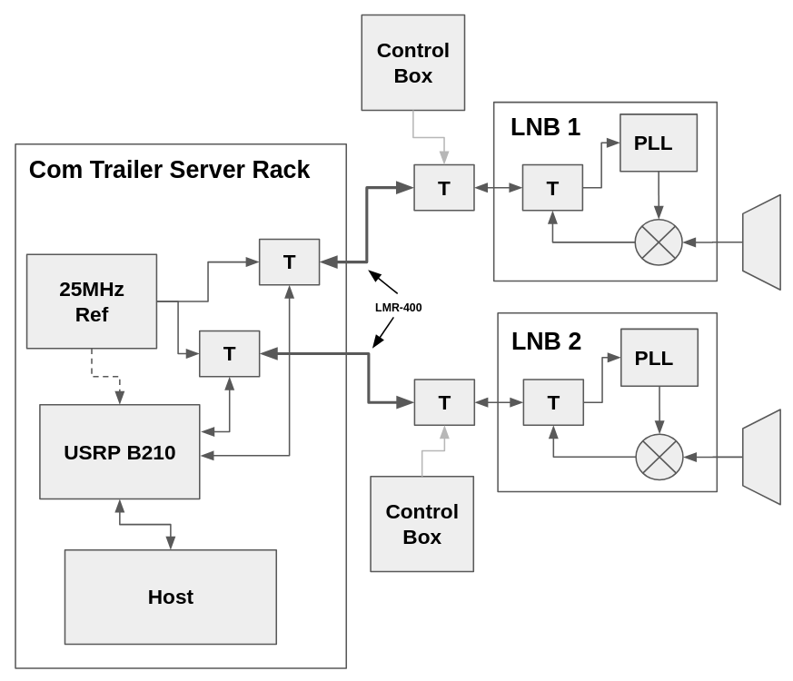
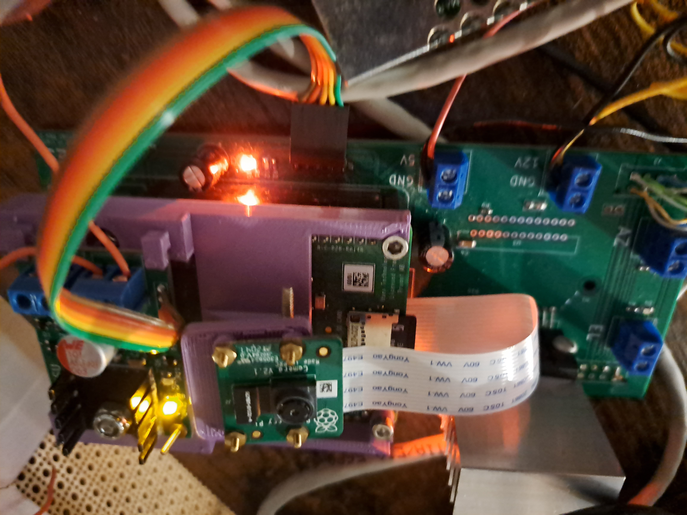
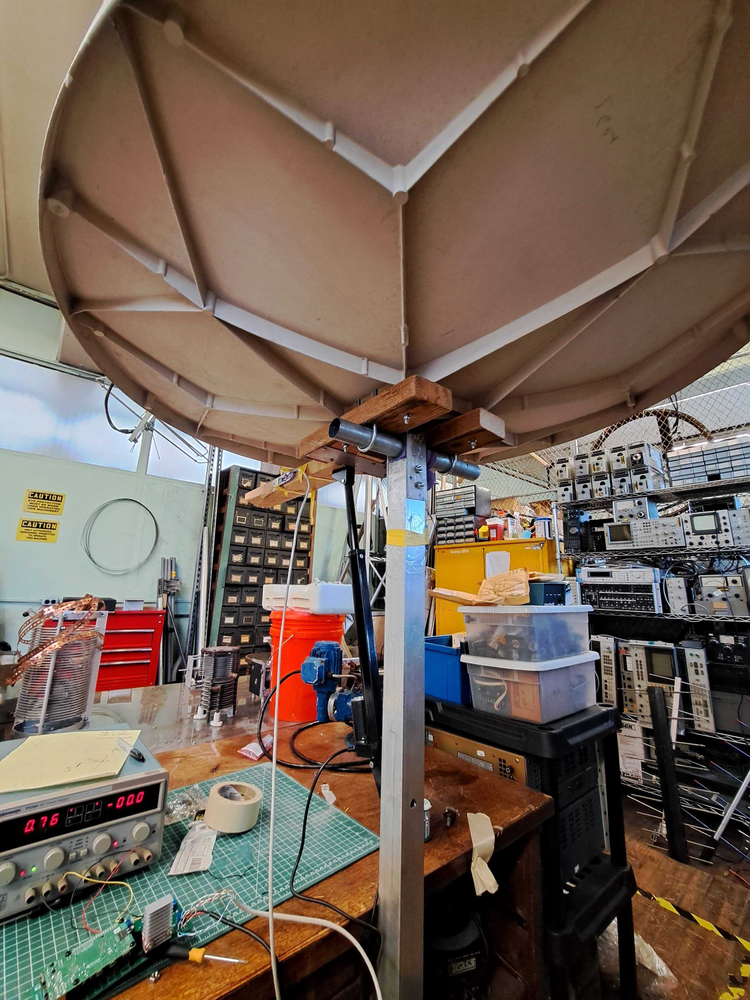
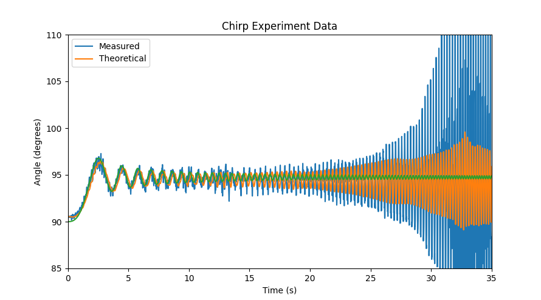
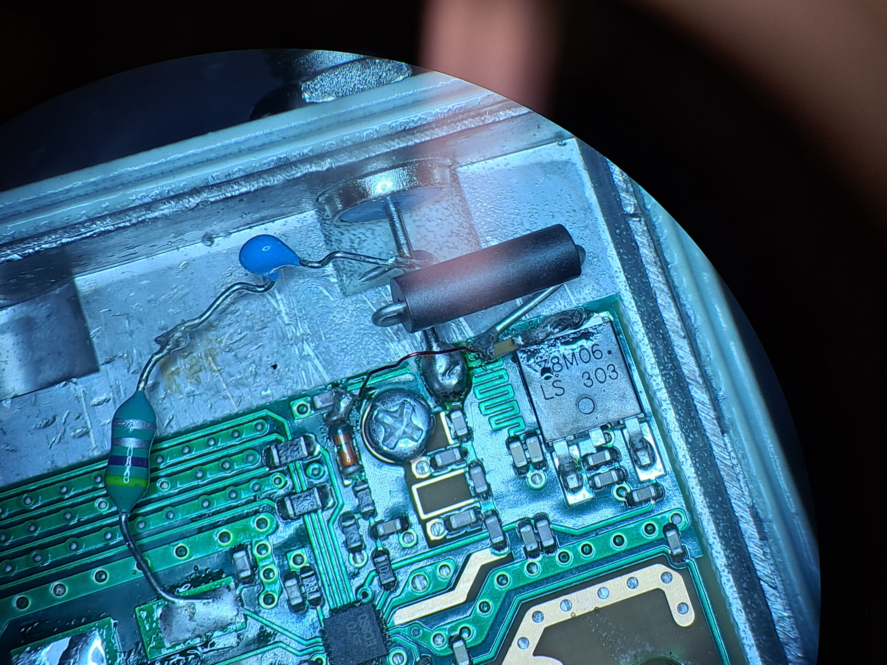

I started working with the Deep Space Exploration Society in high school. After finishing my undergrad, Eli Reed and I were looking for an embedded systems project to work on together, and Dan Layne and Bill Miller from DSES suggested that we could work on setting up the first two dishes of a planned four dish interferometer out at the Haswell site.
The interferometer is to consist of 4 Comtech TVRO dishes with C-band LNBs and feeds. The dishes will have computerized elevation control but no azimuth steering to make the mounts sturdy enough to handle the winds out in Haswell. The intereferometer will be remotely controllable so that observations can be scheduled and conducted without personnel on-site. Our task was to develop everything from the dish control hardware to the interferometer RF frontend and the scheduling server/backend. We developed the following system architecture:

New jobs would be scheduled on the cloud, which would communicate with a desktop computer located in the signal trailer on-site. This computer is connected to a network switch in the trailer, which is in turn connected to "Dish Control Boxes" through a long run of ethernet and 120V power cable. These boxes contain Raspberry Pis with cameras and motor controllers for driving the elevation axes. They also contain low noise power supplies designed for the LNBs, which switch polarization depending on the voltage on the input. The dish control boxes are connected to the main desktop computer with an MQTT server.
For the radio hardware, we used C1(W)-PLL LNBs provided by Ray Uberecken, another DSES engineer. These LNBs can be modified to accept an external 25MHz reference, which allows us to lock them all to a single reference for the coherent operation required for the interferometer. This setup requires that we deliver a common 25MHz reference to each dish on the same run of coax. The received L-Band signal from the LNBs is delivered to a USRP B210 in the signal trailer for digitization. The RF hardware for the first two dishes looks like this:
Between our work schedules, we identified a single day in the summer where both of us could make the trip out to Colorado to install the hardware. I set about building and testing the electrical hardware while Eli started the software development. The assembled boards for the dish control boxes looked like this:
|
|
 |
The power supply board for the LNBs is visible above the Pi camera. The motor controller board is below the Pi. I also had to build the 25MHz reference board, which allows us to switch between a TCXO or a GPS derived reference and provides amplification and signal conditioning for the reference signal. This reference went in a little box made from some aluminum scrap in the Radio Society shop.

|

|
For the elevation control, we needed some way of detecting the dish angle, but the construction of the dishes did not provide a convenient location for installing an encoder. Instead, we had the idea to use an accelerometer stuck on the dish, which would calculate the orientation of the gravity vector to get the dish's angle. This approach has no moving parts and can be potted in epoxy for waterproofing.

One challenge with the IMU is that it is not accurate when the dish is accelerating, which opens the door to some pretty scary problems with oscillations and instability. To test the elevation IMU and the motor control hardware, I set up a model of the system using an old satellite dish at the Radio Society. I mounted this dish on some aluminum channel with a potentiometer on the joint to provide "ground truth" data.
This setup made it possible to test different control loops with Eli's software before going out to the site in Colorado. Part of this process was to calculate the transfer function of the dish/IMU system by driving it with a chirped control signal, which starts swinging it back and forth a low frequencies and then ramps up until the dish breaks or the experiment is over. That (terrifying) experiment yielded this plot, showing how the IMU measurements lose their accuracy at higher accelerations.
Ultimately, a more reasonable approach to fine tuning was to make changes to the controller and then observe the response to commands to change position. The addition of acceleration/jerk control got everything stable enough that we were confident our control loop would translate to the system in Haswell with only minimal tuning on-site.

The blue trace shows the angle estimate from the potentiometer, and the orange line shows the output from the IMU. I suspect that there was some nonlinearity in the old potentiometer (found in a drawer at the Radio Society).
Finally, before setting out, I performed the modifications on the LNBs and confirmed that we could inject the reference into them using the diplexers we had made.
During our day at the site, we were able to get the elevation control connected and working for the one dish that had been installed. It was incredibly satisfying to see the dish respond to MQTT commands after months of planning. We did not have time to connect the feeds, so we left the RF hardware in Haswell for installation on a later site visit. A few weeks later, work began on the new DSES building on the Plishner site, and the interferometer project took a back seat.